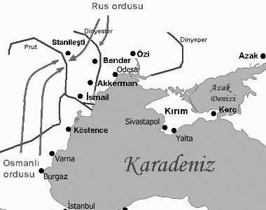
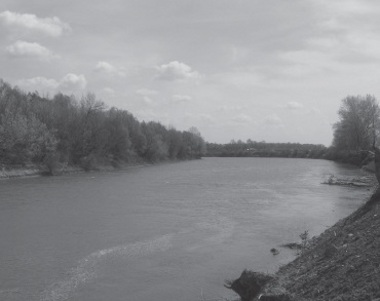

Baltacı Mehmet Paşa’nın sadrazamlık makamına geleceği kimsenin hatırına gelmemişti. Baltacı’nın ahlak ve karakterleri daha ilk sadaretinde anlaşılmıştı.
Siyasi liyakatten mahrum oluşu ise III. Ahmet’in nezdinde de gayet iyi biliniyordu. Fakat III. Ahmet vezirini daima kendine bağlı ve itaatkâr bulundurmak için Baltacı’yı tercih etmiş, onu da “şimdilik” kaydıyla seçmişti.
Baltacı Mehmet Paşa’nın İstanbul’a gelişi çok parlak olmuştu. III. Ahmet’in bu güzide vezirini karşılamak için binlerce yeniçeri gönderiliyor, Baltacı Mehmet Paşa büyük bir gösteriş ile karşılanıyordu. Bu sırada 12. Şarl’a Babıâli’nin teklifini götürmeye memur olanlar da dönmüşler, Rusların taarruzlarından şikâyet eden ahaliden birçok dilekçeler getirmişlerdi.
Mehmet Paşa esasen sadrazamlık makamına geçtiği zaman sarayda İsveç Kralı taraftarlarını pek fazla etkili bulmuştu. Ponyatovski, Şarl’ı tutacak bir muhit hazırlamak için yorulmak bilmeyen bir gayretle uğraşmış, Rus nüfuzunun azalmasına, Osmanlılarla Rusların birbirinden nefret etmeleri için sebepler oluşmasına bütün zekâsını kullanarak gayret etmişti. Özellikle sarayda Valide Sultan, Kızlarağası ve diğer sözü geçen kimselere Ruslarla savaş yapmak konusunda telkinde bulunuyor. Rusların sulh ve barış perdesi altında yaptıkları tecavüzler ve taarruzlar ve kızgınlıklar buna ayrıca bir vesile teşkil ediyordu. Rus politikasının ve daha doğrusu, Büyük Petro siyasetinin o zamanki tutum ve maksadı pek açık idi. Petro, kuzeyde Baltık sahillerine ayak bastıktan sonra güneyde Karadeniz sahillerinde de bir çıkış yolu bulmak istiyor, Osmanlı Hükümetinin içişlerindeki zayıflığını emel ve maksadına müsait bir zemin olarak görüyordu. Rusların bu hareketlerinden Kırım Hanı Devlet Giray da rahatsız olmuştu. Esasen Kırım Hanı’nın bu hususta şikâyetleri olduğu sebebiyle bu mesele hakkındaki fikrini anlamak için kendisi İstanbul’a davet edilmiş ve Huzuru Hümayun’a kabul edilmişti. Devlet Giray, III. Ahmet’in Ruslarla kesin şekilde harbe girilmesini tavsiye ediyor. Hatta “Şevketli Hünkârım, bu kâfir hileci, tuzakçı bir kâfirdir. Eğer ahd ve yaptığı sulh anlaşmasına güven, yaptığı arız ve gösterişlere göz yumulacak olursa işin sonu pek zor olur. Hele Kırım memleketi şimdilik elden gitti. Rumeli, kendi Osmanlı tasarrufundan çıkmaya yüz tutmuştur.[32]” diye III. Ahmet’e memleketin maruz kaldığı tehlikeleri anlatıyordu.
Devlet Giray yalnız bununla kalmamıştı. Yusuf Paşa hakkındaki düşmanlığından dolayı Paşa’yı azlettirmeye, Boğdan Voyvodası Nikola Mavrokordato’yu azlettirerek, yerine Dimitriyos Kantemir’i voyvoda tayin ettirmekte de başarılı olmuştu. Devlet Giray sarayda o derece bir nüfuz kazanmıştı ki, bayramda divan tertip etmek adet değil iken Boğdan Voyvodası’nın tayini için özel bir şekilde divan tertip edilmişti.
III. Ahmet Kırım Hanı’nı mücevherli kılıçlar ve kaftanlarla ödüllendirdikten on gün sonra devlet ileri gelenlerinden, ulema ve ağalardan meydana gelen özel divanda hazır bulunmuştu. Özel divanın programa alınmasından maksat, Rusya’ya karşı ilan edilecek harbe siyasi sebepler bulmak ve bu sebeplerin meşruiyetini takdir etmekti. Gerçekten Rusya’ya harp ilanı için o sırada pek çok sebep vardı. Ruslar Ozi Kalesinden birkaç fersah mesafede Kumanke, Sumara nehirlerinin Dinyeper nehriyle birleştiği yerde Sımarcık Kalesi’ni inşa etmişlerdi. Sonra Boğdan ile Boğ Nehri yönünden çok kereler sınırı tecavüz etmişler, İsveçlilere Çernoviç de ansızın saldırmışlardı. Ruslar yalnız bununla da kalmamışlardı. Daha yakın zamanda Potkal ve Berabaş Kazaklarını kendilerine tabi ettikleri gibi Kamınça Kalesi’ni de Rus askerlerinin muhafazası için işgal ettirmişlerdi. Rusların bütün bu tecavüzleri, bu istila girişimleri harp için birere yeterli sebebi teşkil ediyordu. Meclis bütün bu meseleleri uzun uzadıya incelemiş, nihayet Başmakçızade Ali Efendi’nin fetvasıyla Rusya’ya harp ilanına karar vermişti.


Put Nehri